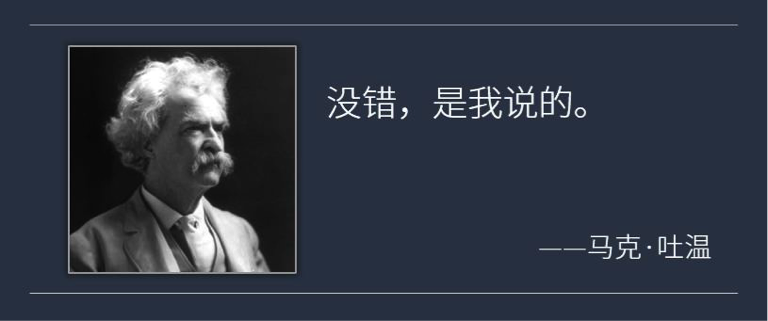
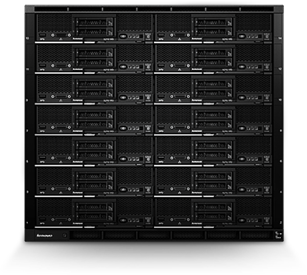

这份外卖离你到底有多遥远？

虽然文学大师马克·吐温曾经说过，“饥饿总是伴随着天才”，但是身为凡人的我们表示真心达不到马老师的境界。
“做个吃饱饭的凡人才有力气想当天才的事儿啊，你说是不是？”隔壁小陈边说边开始叫外卖，“肚子饿的时候谁管饭有多好吃，谁来的快我点谁！”
你愿意付出多少时间等一份外卖呢？半刻钟？一小时？我想大家的回答肯定是越快越好，谁也不会和自己的肚子较劲。除去口味和价格，送餐的速度就是商家挣钱的速度。面对激烈的市场竞争，出色的客户响应速度就是企业生命的保证。
同样的情况也发生在欧洲云服务市场。和叫餐的外卖类似，云服务某种意义上也是一种计算、存储资源的“外卖”。以IaaS云为例，这个市场的复合年增长率(CAGR)达到38.8%，未来5年将至少增长5倍。面对这么一块大蛋糕，谷歌、亚马逊甚至阿里等云服务大厂都磨刀霍霍向欧洲。在巨头环伺的欧洲云服务市场，一家名不见经传的云计算服务公司却争夺了一席之地，它是谁呢？
它就是Merkl IT公司。Merkl IT神在它凭借“静若处子，动若脱兔”的客户响应能力得到目标客户的青睐，逐渐成长为行业内一股重要的力量，与巨头们争夺领地。
静若处子，优雅实现客户需求
客户响应能力的一个考核维度就是企业能否顺利实现客户提出的业务需求。Merkl IT采用了Flex System方案来构建自己云服务的硬件基础，这套方案使得Merkl IT在面对客户新的、不断增长的业务需求时，可以游刃有余的为它们添加新的服务器和存储节点，免除客户对业务承载问题的担忧。

联想Flex System机箱帅照
动若脱兔，提升2倍的响应速度
客户响应速度对提升客户满意度、缓解客户焦虑的重要性不言而喻。在实际业务执行中，采用Flex System方案后，Merkl IT能够实现比以前快一倍的速度配置系统，也就是说，Merkl IT马上就拥有了以两倍速度响应客户需求的能力。这一优势不仅为客户减少了等待时间，同时也为自己的员工争取了更多时间，形成Merkl IT在市场拼杀中重要的竞争力。Merkl IT管理合伙人Maximilian Merkl也说到，“员工从费时的手工工作中解放出来之后，他们将有更多精力帮助提高公司的知名度。”
除了优秀的客户响应能力，Flex System还能带来更多收益：由于配有集成式网络基础架构，FlexSystem能够帮助Merkl IT减少80%的外部电缆成本，运营成本的下降也进而使得客户减轻了这方面的成本压力。
“基于超级可靠的Flex System 来提供我们的云服务，意味着即使小型企业也可以从该尖端技术提供的可靠性和可扩展性中受益。”
—Merkl IT管理合伙人Maximilian Merkl